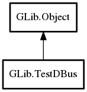

TestDBus
Object Hierarchy:
Description:
A helper class for testing code which uses D-Bus without touching the user's session bus.
Note that TestDBus modifies the user’s environment, calling setenv. This is not thread-safe, so
all TestDBus calls should be completed before threads are spawned, or should have appropriate locking to
ensure no access conflicts to environment variables shared between TestDBus and other threads.
Creating unit tests using GTestDBus
Testing of D-Bus services can be tricky because normally we only ever run D-Bus services over an existing instance of the D-Bus daemon thus we usually don't activate D-Bus services that are not yet installed into the target system. The TestDBus object makes this easier for us by taking care of the lower level tasks such as running a private D-Bus daemon and looking up uninstalled services in customizable locations, typically in your source code tree.
The first thing you will need is a separate service description file for the D-Bus daemon. Typically a `services` subdirectory of your `tests` directory is a good place to put this file.
The service file should list your service along with an absolute path to the uninstalled service executable in your source tree. Using autotools we would achieve this by adding a file such as `my-server.service.in` in the services directory and have it processed by configure.
[D-BUS Service]You will also need to indicate this service directory in your test fixtures, so you will need to pass the path while compiling your test cases. Typically this is done with autotools with an added preprocessor flag specified to compile your tests such as:
Name=org.gtk.GDBus.Examples.ObjectManager
Exec=@abs_top_builddir@/gio/tests/gdbus-example-objectmanager-server
-DTEST_SERVICES=\""$(abs_top_builddir)/tests/services"\"Once you have a service definition file which is local to your source tree, you can proceed to set up a GTest fixture using the TestDBus scaffolding.
An example of a test fixture for D-Bus services can be found here: gdbus-test-fixture.c
Note that these examples only deal with isolating the D-Bus aspect of your service. To successfully run isolated unit tests on your service you may need some additional modifications to your test case fixture. For example; if your service uses GSettings and installs a schema then it is important that your test service not load the schema in the ordinary installed location (chances are that your service and schema files are not yet installed, or worse; there is an older version of the schema file sitting in the install location).
Most of the time we can work around these obstacles using the environment. Since the environment is inherited by the D-Bus daemon created
by TestDBus and then in turn inherited by any services the D-Bus daemon activates, using the setup routine for
your fixture is a practical place to help sandbox your runtime environment. For the rather typical GSettings case we can work around this
by setting `GSETTINGS_SCHEMA_DIR` to the in tree directory holding your schemas in the above fixture_setup routine.
The GSettings schemas need to be locally pre-compiled for this to work. This can be achieved by compiling the schemas locally as a step before running test cases, an autotools setup might do the following in the directory holding schemas:
all-am:
$(GLIB_COMPILE_SCHEMAS) .
CLEANFILES += gschemas.compiled
Namespace: GLib
Package: gio-2.0
Content:
Properties:
Static methods:
Creation methods:
Methods:
Inherited Members:
All known members inherited from class GLib.Object